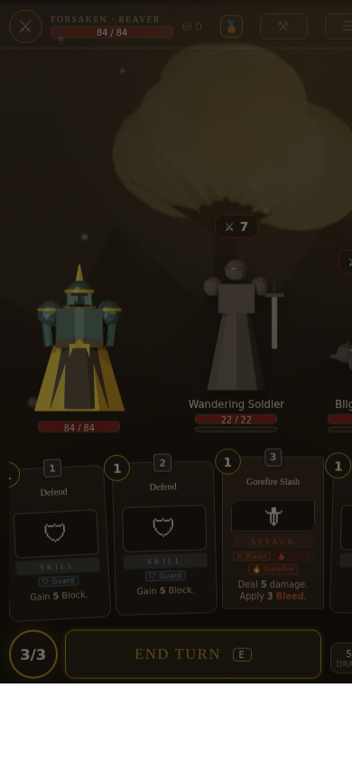

f7d0323,
390×844, shipped defaults, seed SHOWCASE.
ILLUSTRATION — the banner is drawn. It does not exist.
The run is still live underneath it: cards, HP bars and End Turn are all
uncovered, which is the claim being drawn.